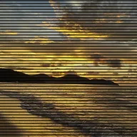

Scanlijnen

Voegt horizontale scanlijnen toe voor een CRT-monitoreffect, met optioneel verticaal rollen.
Instellingen
| Instelling | Type | Bereik | Standaard |
|---|---|---|---|
| Lijnafstand | Getal | 2 tot 20 | 6 |
| Donkerheid | Getal | 0 tot 1 | 0.4 |
| Rolsnelheid | Getal | 0 tot 2 | 0.3 |